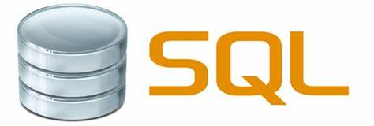

<!DOCTYPE html>
<html lang="es"></html>
<head>
<h1>Lenguajes</h1>

</head>
<body>
   <h1> java</h1>
   <p>Java es un lenguaje de programación y una plataforma informática comercializada por primera vez en 1995 por Sun Microsystems. Hay muchas aplicaciones y sitios web que no funcionarán a menos que tenga Java instalado y cada día se crean más. Java es rápido, seguro y fiable. Desde portátiles hasta centros de datos, desde consolas para juegos hasta súper computadoras, desde teléfonos móviles hasta Internet, Java está en todas partes</p>
    
    <a href="https://www.java.com/es/download/help/whatis_java.html">pagina java</a>
    <h1>Python</h1>
    <p>Python es un lenguaje de programación interpretado cuya filosofía hace hincapié en la legibilidad de su código.​ Se trata de un lenguaje de programación multiparadigma, ya que soporta orientación a objetos, programación imperativa y, en menor medida, programación funcional.</p>
    
    <a href="https://www.python.org/">pagina Python</a>
    <h1>C#</h1>
    <p>"C#" es un lenguaje de programación multiparadigma desarrollado y estandarizado por la empresa Microsoft como parte de su plataforma .NET, que después fue aprobado como un estándar por la ECMA e ISO. C# es uno de los lenguajes de programación diseñados para la infraestructura de lenguaje común.</p>
    
    <a href="https://docs.microsoft.com/en-us/dotnet/csharp/">pagina C#</a>
    <h1>JavaScript</h1>
    <p>JavaScript es un lenguaje de programación interpretado, dialecto del estándar ECMAScript. Se define como orientado a objetos, ​ basado en prototipos, imperativo, débilmente tipado y dinámico.</p>
    
    <a href="https://www.javascript.com/">pagina JavaScript</a>
    <h1>C</h1>
    <p> C es un lenguaje de programación de propósito general ​ originalmente desarrollado por Dennis Ritchie entre 1969 y 1972 en los Laboratorios Bell, ​ como evolución del anterior lenguaje B, a su vez basado en BCPL. ​ ​ ​ Al igual que B, es un lenguaje orientado a la implementación de sistemas operativos, concretamente Unix.</p>
    
    <a href="http://www.open-std.org/jtc1/sc22/wg14/www/standards">pagina C</a>
    <h1>C++</h1>
    <p>C++ es un lenguaje de programación diseñado en 1979 por Bjarne Stroustrup. La intención de su creación fue extender al lenguaje de programación C mecanismos que permiten la manipulación de objetos.</p>
    
    <a href="https://www.cprogramming.com/">pagina C++</a>
    <h1>Visual Basic</h1>
    <p>Visual Basic es un lenguaje de programación dirigido por eventos, desarrollado por Clan Cooper para Microsoft. Este lenguaje de programación es un dialecto de BASIC, con importantes agregados. Su primera versión fue presentada en 1991</p>
    
    <a href="https://docs.microsoft.com/en-us/previous-versions/visualstudio/visual-basic-6/visual-basic-6.0-documentation?redirectedfrom=MSDN/">pagina Visual Basic</a>
    <h1>Net</h1>
    <p>La plataforma .NET de Microsoft es un componente de software que puede ser añadido al sistema operativo Windows. Provee un extenso conjunto de soluciones predefinidas para necesidades generales de la programación de aplicaciones</p>
    
    <a href="https://dotnet.microsoft.com/">pagina NET</a>
    <h1>PHP</h1>
    <p>PHP es un lenguaje de programación de uso general que se adapta especialmente al desarrollo web. ​ Fue creado inicialmente por el programador danés-canadiense Rasmus Lerdorf en 1994. ​ En la actualidad, la implementación de referencia de PHP es producida por The PHP Group.</p>
    
    <a href="https://www.php.net/">pagina PHP</a>
    <h1>Swift</h1>
    <p>Swift es un lenguaje de programación multiparadigma creado por Apple enfocado en el desarrollo de aplicaciones para iOS y macOS. Fue presentado en la WWDC 2014 ​ y está diseñado para integrarse con los Frameworks Cocoa y Cocoa Touch; puede usar cualquier biblioteca programada en Objective-C y llamar a funciones de C.</p>
    
    <a href="https://swift.org/">pagina Swift</a>
    <h1>SQL</h1>
    <p>SQL es un lenguaje de dominio específico utilizado en programación, diseñado para administrar, y recuperar información de sistemas de gestión de bases de datos relacionales. Una de sus principales características es el manejo del álgebra </p>
    
    <a href="https://www.mysql.com/">pagina SQL</a>
    <h1>Ruby</h1>
    <p>Ruby es un lenguaje de programación interpretado, reflexivo y orientado a objetos, creado por el programador japonés Yukihiro "Matz" Matsumoto, quien comenzó a trabajar en Ruby en 1993, y lo presentó públicamente en 1995</p>
    
    <a href="http://www.ruby-lang.org/es/">pagina Ruby</a>


</body>
<footer>
    <var>
        <a href=file:///C:/Users/Javier%20T/Documents/2020--2/programacion%20web/Taller3/menu.html>Retornar a menu </a>
    </var>

</footer>